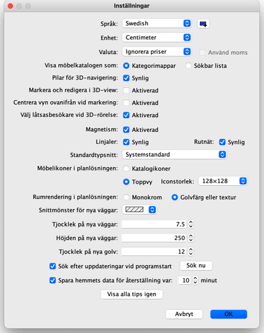

|
F�r att �ndra inst�llningarna f�r Sweet Home 3D v�ljer du
Sweet Home 3D > Inst�llningar... under Mac OS X eller
Arkiv > Inst�llningar... under andra operativsystem.

I inst�llningsrutan kan du v�lja vilket Spr�k som anv�nds i Sweet Home 3D:s
anv�ndargr�nssnitt och vilken Enhet som anv�nds n�r du ritar hemmet, p�
planl�sningens linjaler och rutn�t, samt p� l�ngder som visas.
Knappen bredvid listknappen för språkval låter dig importera
ytterligare språkfiler med filändelsen SH3L.
Radioknapparna Kategorimappar och S�kbar lista l�ter dig v�lja hur
m�belkatalogen ska visas i varje Sweet Home 3D-f�nster.
Kryssrutan f�r 3D-navigationspilarna l�ter dig visa pilknapparna som hj�lper
dig att navigera i 3D-vyn.
N�r alternativet Centrera vyn ovanifr�n vid markering aktiveras kommer centrum
f�r 3D-vyns Vy ovanifr�n att vara p� de objekt som markeras i planl�sningen. Om inget
objekt �r valt eller om detta alternativ �r inaktiverat, s� kommer vyn att centreras
p� hemmets centrum, som kan variera beroende p� vilka objekt de inneh�ller.
N�r alternativet V�lj l�tsasbes�kare vid 3D-r�relse aktiveras s� kommer den
virtuella l�tsasbes�karen att markeras och visas i 2D-planl�sningen varje g�ng en
r�relse g�rs i 3D-vyn i L�tsasbes�kare-l�get. Du b�r inaktivera detta
alternativ om du inte vill f�rlora aktuell markering i planl�sningen och/eller �ndra
den synliga delen av planl�sningen vid varje r�relse i 3D-vyn.
Kryssrutan Magnetism sl�r av eller p� magnetismen som anv�nds i planl�sningen
n�r man ritar v�ggar och
placerar ut m�bler. Magnetism kan ocks�
avaktiveras / aktiveras med Magnet-ikonen som du hittar i Sweet Home 3D
verktygsf�ltet.
Kryssrutan Linjaler visar eller tar bort linjalerna runt planl�sningens
ruta.
Kryssrutan Rutn�t visar eller tar bort rutn�tet i planl�sningen.
Standardtypsnitt-rutan l�ter dig v�lja typsnittet som anv�nds f�r text i
planl�sningen (t.ex. m�belnamn,
rumnamn och yta, m�tt vid
m�tts�ttningar och standardtypsnitt f�r
text).
Alternativen Katalogikoner och Toppvy l�ter dig v�lja hur m�bler ska
ritas i planl�sningen (se bilderna nedan). N�r alternativet Toppvy aktiveras s�
kommer ikonstorlek-listrutan l�ta dig v�lja storleken i pixlar p� ikonen som
ritas i 2D-planl�sningen. H�gre storlekar ger finare planl�sningar n�r de ritas upp p�
sk�rmen, skrivs ut eller exporteras till SVG-format, men de kr�ver ocks� mer minne f�r
att fungera.
Alternativen Monokrom och Golvf�rg eller textur l�ter dig v�lja om
rummen i planl�sningen ska ritas med f�rg eller texturen som du valt f�r deras golv,
eller med en gr� f�rg (skrivs ut som vitt).
Listrutan Snittmönster för nya väggar l�ter dig v�lja m�nstret
som ska anv�ndas f�r att fylla i v�ggarna i planl�sningen.
F�ltet Tjocklek p� nya v�ggar st�ller in tjockleken p� nya v�ggar och g�ller
fr�n och med n�r inst�llningsrutan st�ngs.
F�ltet H�jden p� nya v�ggar st�ller in h�jden p� nya v�ggar och g�ller fr�n och
med n�r inst�llningsrutan st�ngs.
Tjocklek för nya golv ställer in tjockleken på golv på
nya nivåer.
N�r alternativet S�k efter uppdateringar vid programstart �r valt s� kommer en
s�kning efter uppdateringar till Sweet Home 3D att g�ras varje g�ng programmet startas
och resultatet visas i en dialogruta. Detta alternativ s�ker �ven efter uppdateringar
till vissa m�belbibliotek (SH3F-filer), texturbibliotek (SH3T-filer), spr�kbibliotek
(SH3L-filer) och insticksmoduler (SH3P-filer) som du har installerat, beroende p� hur
de konfigurerats.
Rutan efter Spara hemmets data f�r �terst�llning var best�mmer antalet minuter
mellan tv� sparningar f�r �ppnade hem. Dessa hem sparas automatiskt i privata filer
som kommer att �ppnas f�r �terst�llning n�sta g�ng Sweet Home 3D startar, om
programmet kraschade vid senaste anv�ndningen.
Slutligen, knappen Visa alla tips igen �terst�ller svaret du gav i kryssrutan
Visa inte detta tips igen i tips-dialogrutorna som visas n�r du klickar p�
n�got verktyg. Detta betyder att alla dialogrutorna d�r du markerade kryssrutan kommer
att visas igen.
 |
|
 |
Rendering av planl�sningen med
katalogikoner, monokroma golv och v�ggar
ifyllda med m�nster f�r snittyta
|
Rendering av planl�sning med toppvy-ikoner
av m�blerna, golvf�rger och v�ggarna
ifyllda med svart
|
|